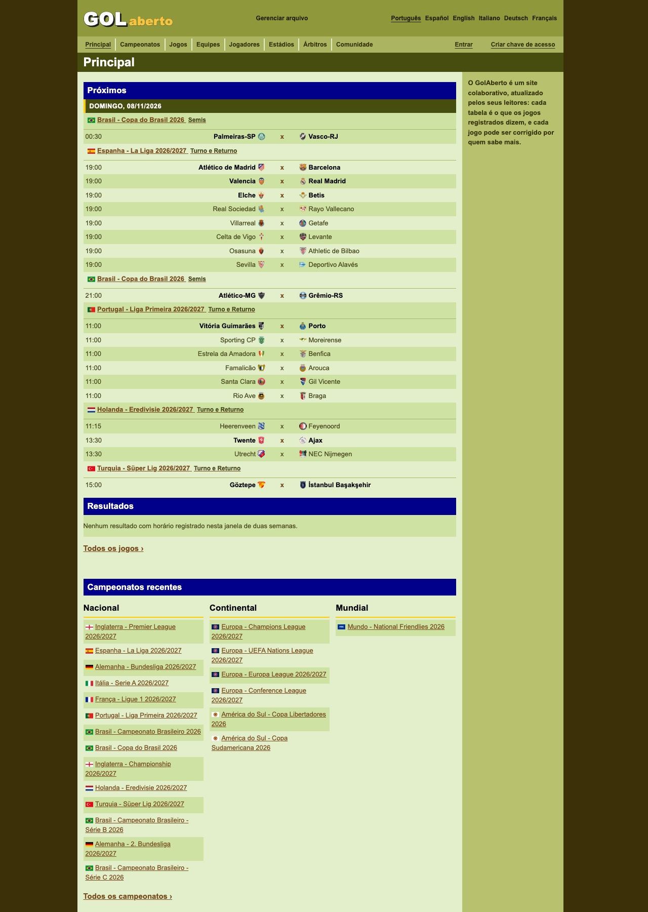

Follow-up review: local checks pass, hosted hydration blocks verification
PR #2325 carries the bounded edge computation and hosted standings verification follow-up. The independent runtime review found no actionable issue. QA identified that automatic fixture recovery excludes partial cleanup; that documented limit remains.
Doctor, generation, lint, build and the complete app test command exited successfully. The Docker replay gate passed; remaining integration gates and CI were still running when this entry was written. Two verification commands were corrected to resolve dependencies through the pinned Pronto runtime.
The deployed site passed 382 immutable asset checks, six catalogues, 24 document routes and the negative cache probe. Browser verification failed: all 16 visited screens timed out, and seven additional routes could not be resolved. A homepage probe rendered populated content with no page exception, but retained data-served after boot while POST /auth/guest remained pending. Its backend cause is not established. No new mutation or rollback proof was obtained.
